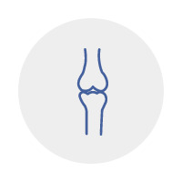

[In Orthopedics]
-I was injured in a (traffic) accident.
-I got a hit on my head.
-I have broken my leg.
-My arm is broken.
-My back went out. = I threw my back out.
-I slipped and fell then sprained my ankle/wrist.
-My right/left ankle is sprained.
-I have a tight muscle around my neck.
-I have a back pain.
-I have a leg ache.
-I have a bruise.
-I cut my finger(s).